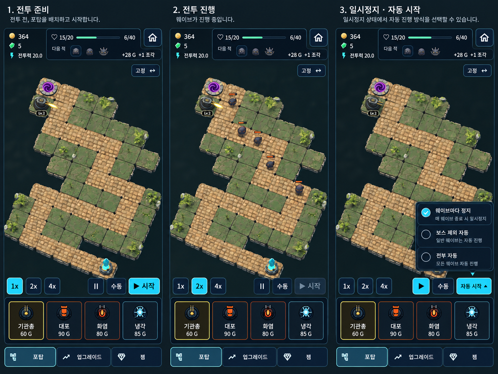
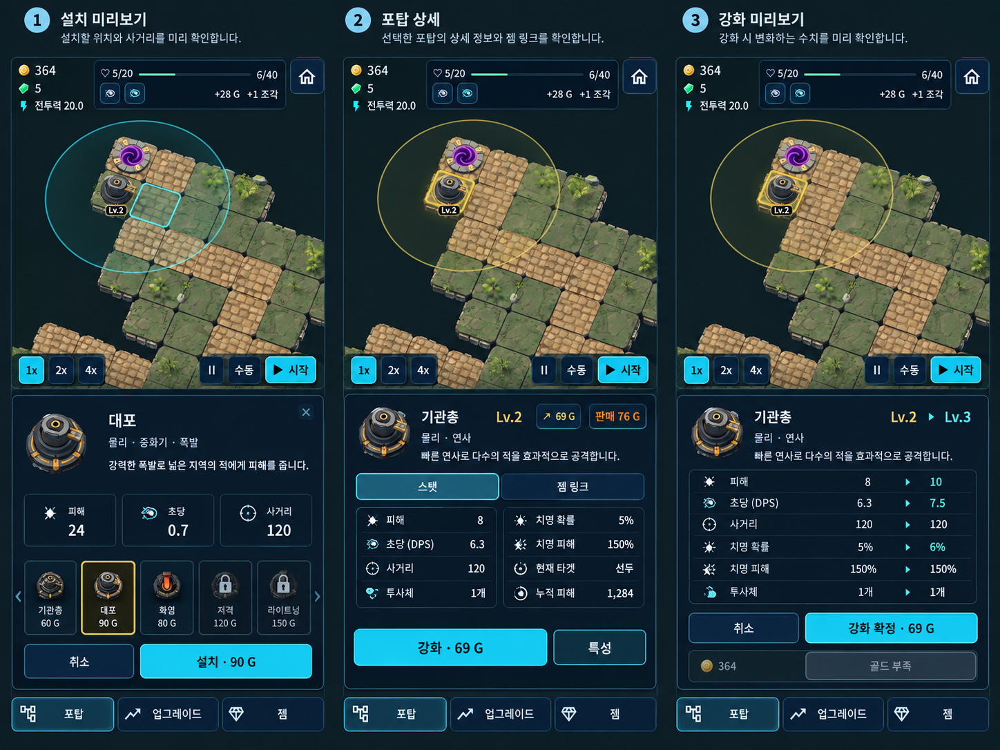
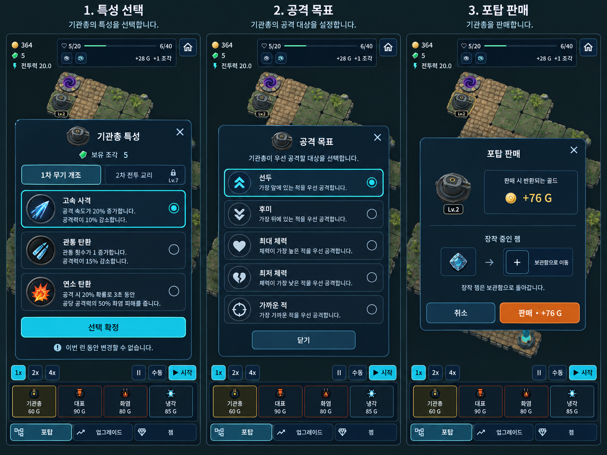
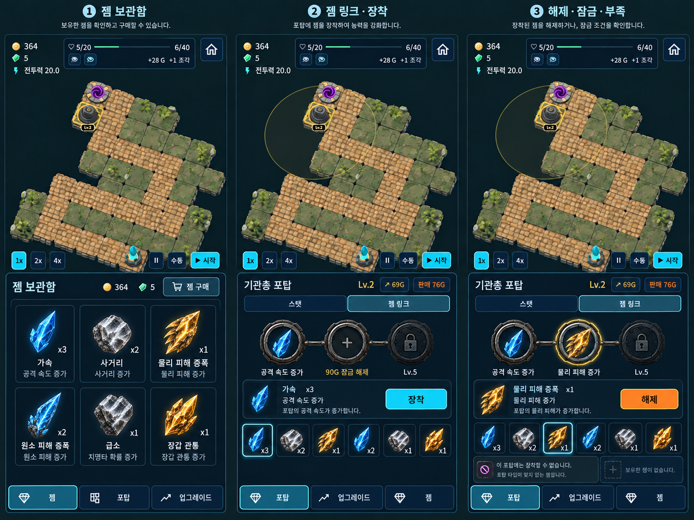
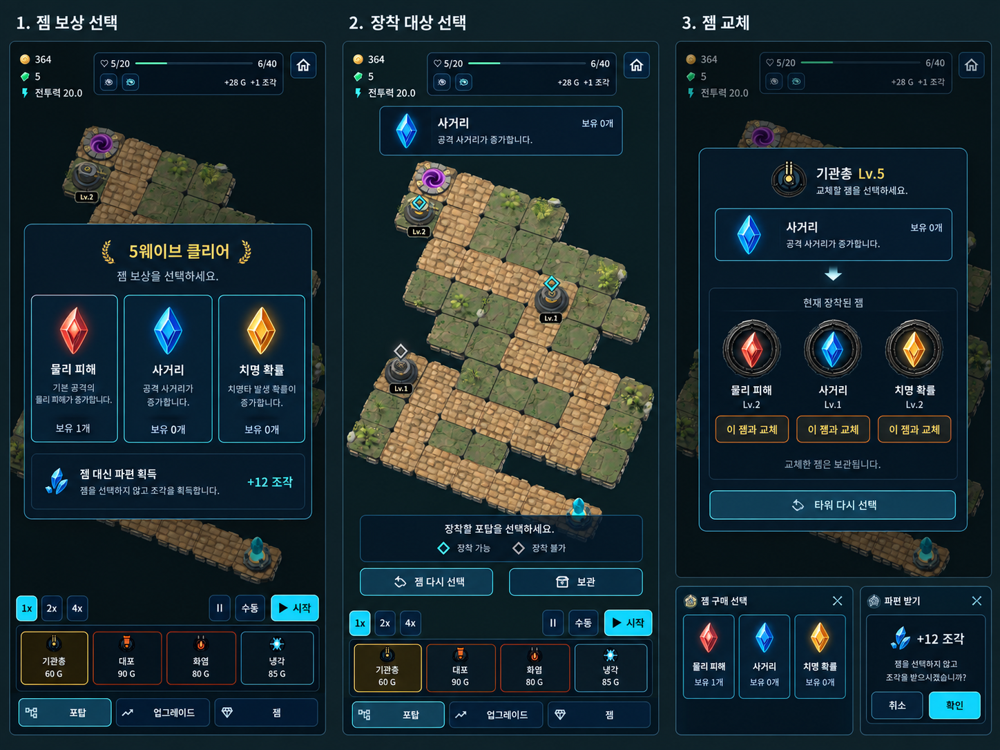
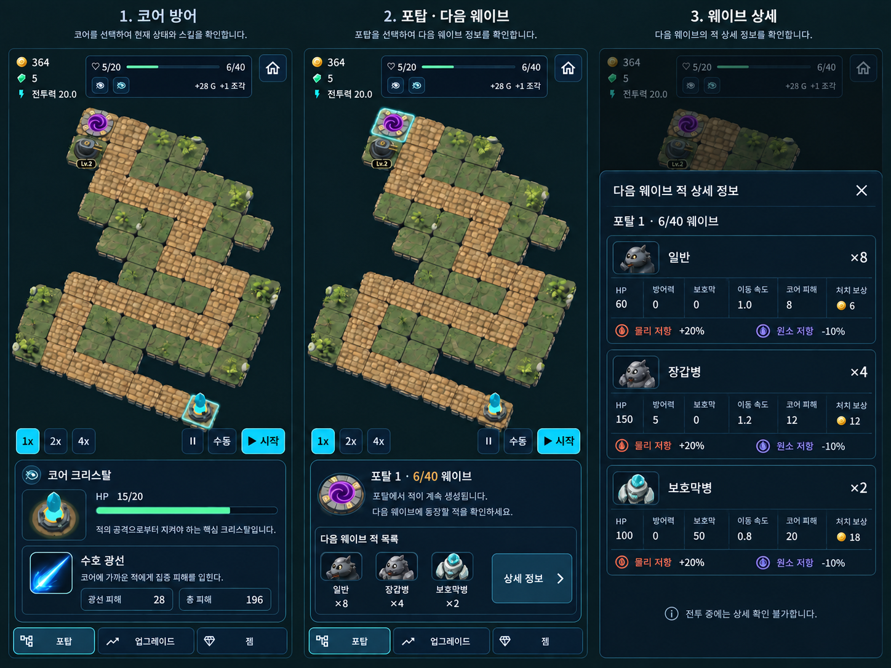
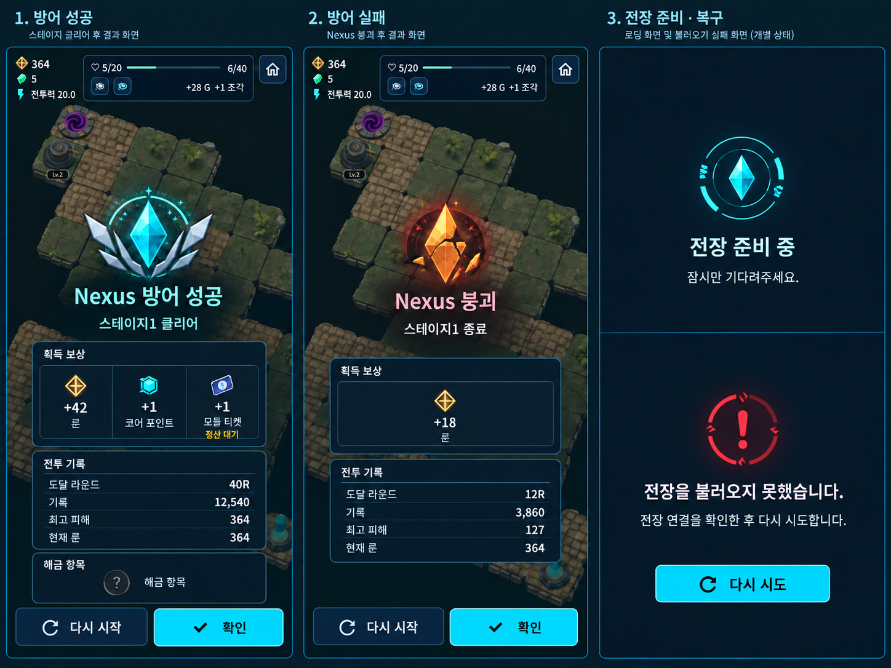
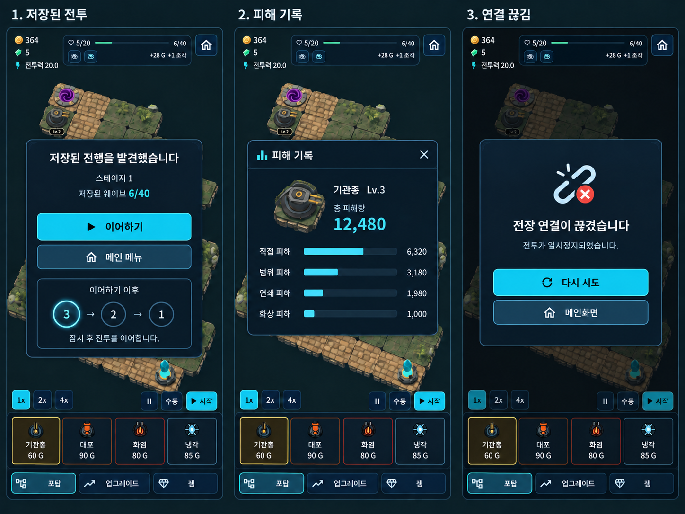

1. 전투 HUD
준비·진행·정지를 같은 HUD에서 구분. 자원/웨이브 정보는 상단, 조작은 하단 고정. 자동 시작은 버튼 위 팝업.

이미지를 누르면 원본 크기로 볼 수 있습니다.2. 포탑 설치와 강화
포탑 정보와 구매 행동을 분리. 피해·공격 속도·DPS를 별도 표기하고 강화 전후 비교를 정렬. 판매는 보조 행동.

이미지를 누르면 원본 크기로 볼 수 있습니다.3. 특성과 전투 선택
특성은 선택 후 확정, 공격 목표는 즉시 적용, 판매는 반환 자원과 젬 귀속을 확인. 잠금 조건과 파편 비용 유지.

이미지를 누르면 원본 크기로 볼 수 있습니다.4. 젬 보관과 링크
보관함은 아이콘·수량·효과 비교, 포탑에서는 연결 소켓과 선택 젬 상세에 집중. 해제·중복·호환 불가·잠금 이유를 명시.

이미지를 누르면 원본 크기로 볼 수 있습니다.5. 보상과 장착 대상
보상 선택 → 전장 대상 선택 → 필요 시 교체. 보관·다시 선택 유지. 구매 선택에는 파편 대체가 없으며 파편 수령은 별도 확정.

이미지를 누르면 원본 크기로 볼 수 있습니다.6. 코어와 웨이브 정보
코어 체력·스킬 지표와 웨이브 적 정보를 구분. 적 상세는 수치 열을 정렬하고 저항/취약은 색과 부호를 함께 사용.

이미지를 누르면 원본 크기로 볼 수 있습니다.8. 결과와 진입 상태
승리/패배는 같은 구조로 보상·기록·다음 행동 표시. 로컬 저장 대기와 서버 정산 대기 구분. 로딩은 불투명 차단.

이미지를 누르면 원본 크기로 볼 수 있습니다.9. 복구와 상세 기록
Flutter 잔존 흐름의 보존 제안: 진행 복구, 이어하기 이후 카운트다운, 피해 내역, 엔진 연결 끊김. Godot 구현 완료를 뜻하지 않음.

이미지를 누르면 원본 크기로 볼 수 있습니다.